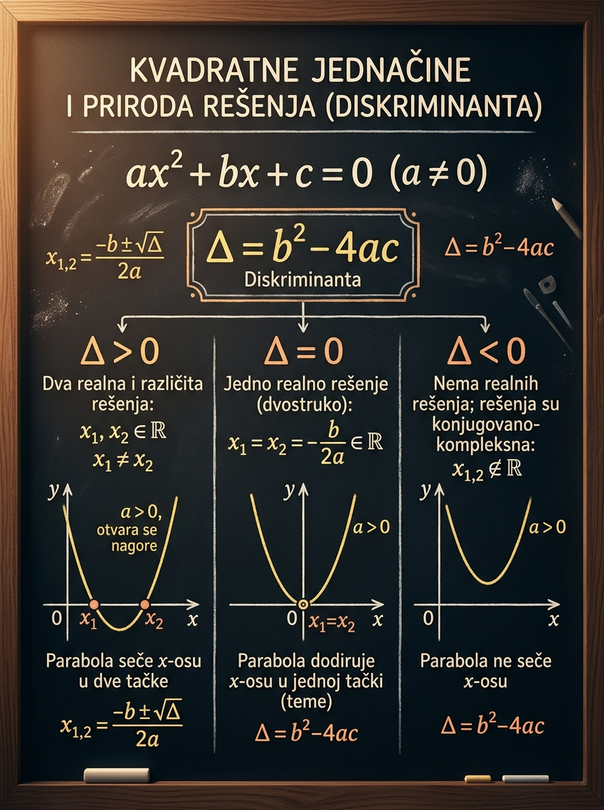

Šta učiš
Kako da prepoznaš kvadratnu jednačinu, primeniš \(abc\) formulu i iz diskriminante pročitaš broj i tip korena.
Na prijemnom nije dovoljno da samo mehanički ubaciš brojeve u formulu. Važno je da odmah vidiš šta jednačina „obećava“: da li će parabola seći \(x\)-osu u dve tačke, samo dodirnuti osu ili uopšte neće imati realne preseke. Diskriminanta je upravo taj brzi odgovor, a ova lekcija je tu da poveže račun, geometriju i tipične ispitne zamke u jednu jasnu sliku.
Kako da prepoznaš kvadratnu jednačinu, primeniš \(abc\) formulu i iz diskriminante pročitaš broj i tip korena.
Pogrešno čitanje koeficijenata kada jednačina nije sređena na oblik \(ax^2 + bx + c = 0\).
Kada je dovoljno analizirati \(\Delta\), a kada moraš računati i same korene ili diskutovati parametar.

Kvadratne jednačine su centralna tema skoro svakog prijemnog ispita. Pojavljuju se direktno, ali i kao skriveni korak u eksponencijalnim, logaritamskim, trigonometrijskim i parametarskim zadacima. U svim tim situacijama diskriminanta daje prvi ozbiljan uvid u problem.
Ako odmah izračunaš \(\Delta\), znaš da li tražiš dva realna korena, jedan dvostruki koren ili da li u realnim brojevima nema rešenja.
Broj realnih korena jednak je broju preseka parabole \(y=ax^2+bx+c\) sa \(x\)-osom. Zato je diskriminanta most između algebre i slike.
Često se traži da jednačina ima dva realna korena, jedno rešenje ili da nema realna rešenja. Tada je uslov upravo na znaku diskriminante.
Kvadratna jednačina je algebarska jednačina drugog stepena po nepoznatoj \(x\). Najvažnije je da je pre računanja središ na standardni oblik.
Brojevi \(a\), \(b\) i \(c\) su koeficijenti. Uslov \(a \neq 0\) je presudan: ako bi bilo \(a=0\), jednačina više ne bi bila kvadratna nego linearna.
Tražimo vrednosti promenljive \(x\) za koje je izraz \(ax^2+bx+c\) jednak nuli. Geometrijski, to su upravo \(x\)-koordinate preseka parabole sa \(x\)-osom.
\(2x^2 - 3x - 5 = 0\) je odmah u standardnom obliku, pa čitamo \(a=2\), \(b=-3\), \(c=-5\).
Iz \(7 - 5x = -2x^2\) prvo dobijamo \(2x^2 - 5x + 7 = 0\), pa tek onda čitamo koeficijente.
\(0\cdot x^2 + 4x - 1 = 0\) nije kvadratna jednačina, jer je zapravo \(4x - 1 = 0\).
Jednačina jeste kvadratna, ali nije zapisana u standardnom redosledu. Prepiši je kao \(2x^2 - 4x + 3 = 0\), pa dobijaš \(a=2\), \(b=-4\), \(c=3\).
Najpoznatiji alat je \(abc\) formula. Nju ne treba tretirati kao magiju: ona samo sistematski rešava svaku kvadratnu jednačinu kada su koeficijenti poznati.
Pod korenom se nalazi izraz \(b^2 - 4ac\). Upravo taj izraz nazivamo diskriminantom i on odlučuje kakva će rešenja ispasti kada pokušamo da izračunamo korene.
Prebaci sve na jednu stranu i napiši jednačinu kao \(ax^2+bx+c=0\).
Posebno pazi na znak uz \(b\) i \(c\). Tu se greši više nego u samom računu.
Prvo diskutuješ diskriminantu, pa tek onda iz nje izvodiš posledice po rešenja.
Kada znaš znak diskriminante, mnogo sigurnije i smislenije koristiš \(abc\) formulu.
Rešimo jednačinu \(x^2 - 5x + 6 = 0\).
Ovde je \(\Delta>0\), pa nije iznenađenje što dobijamo dva različita realna korena.
Zato što se u standardnom obliku član uz \(x\) piše kao \(bx\). Ovde je zaista \(+4x\), pa je \(b=4\). Negativan \(b\) bismo imali kada bi stajalo \(-4x\).
Diskriminanta govori da li broj pod korenom u \(abc\) formuli daje pozitivan, nulti ili negativan rezultat. Od toga zavisi cela priča o rešenjima.
Kada je \(\Delta\) poznata, ne moraš odmah da izračunavaš korene da bi znao šta se dešava. Zato diskriminanta često dolazi pre celog računa, naročito u zadacima sa parametrima.
Pod korenom je pozitivan broj, pa postoje dva različita realna korena. Parabola seče \(x\)-osu u dve tačke.
Dobijamo jedan dvostruki koren. To znači: jedan realan koren kao broj, ali se u algebarskom smislu javlja dva puta. Parabola dodiruje \(x\)-osu.
Nad skupom realnih brojeva nema rešenja, jer ne postoji realan broj čiji je kvadrat negativan. Nad skupom kompleksnih brojeva dobijamo konjugovano kompleksne korene.
Ako parabola seče \(x\)-osu u dve tačke, imaš dva realna korena i \(\Delta>0\). Ako samo dodiruje osu, onda je \(\Delta=0\). Ako je cela iznad ili ispod ose bez preseka, onda je \(\Delta<0\) i realnih korena nema.
To ne znači da jednačina „nema nikakvo rešenje“. Precizno: nema realna rešenja. Ako radiš u kompleksnim brojevima, dobijaš dva konjugovano kompleksna korena.
Kada je vreme ograničeno, cilj nije da „juriš formulu“, nego da vodiš uredan i kratak postupak koji smanjuje broj grešaka.
Bez toga nema pouzdanog čitanja \(a\), \(b\) i \(c\).
Često je već taj korak dovoljan da rešiš pitanje iz zadatka.
Nekad traži prirodu rešenja, nekad korene, a nekad uslov na parametar.
Ako nije drugačije naglašeno, na prijemnom se najčešće misli na realna rešenja.
Menjaj koeficijente i prati kako se parabola pomera u odnosu na \(x\)-osu. Cilj je da počneš da „vidiš“ diskriminantu i pre nego što je izračunaš.
Na grafiku se vidi ista informacija koju daje diskriminanta. Ako parabola seče osu, koreni su realni. Ako ne seče, realnih korena nema.
Žuta tačka označava teme parabole. Zelene tačke se pojavljuju kada postoje realni koreni.
Standardni oblik za trenutne koeficijente.
Prvi broj koji čitamo na prijemnom.
Ovo je odgovor koji često već rešava pola zadatka.
Za \(\Delta<0\) prikazuju se kompleksni koreni.
Primeri su raspoređeni tako da prvo učvrstiš osnovni algoritam, a zatim vidiš kako diskriminanta radi u parametarskim pitanjima.
Reši \(x^2 - 7x + 10 = 0\).
Reši \(4x^2 - 4x + 1 = 0\).
Reši nad \(\mathbb{C}\) jednačinu \(2x^2 + 4x + 5 = 0\).
Za koje vrednosti parametra \(p\) jednačina \(x^2 - 2x + p = 0\) ima dva različita realna rešenja?
Ove formule nisu odvojene. Čitaj ih kao jedan lanac: standardni oblik \(\rightarrow\) diskriminanta \(\rightarrow\) priroda rešenja \(\rightarrow\) sami koreni.
Bez standardnog oblika nema sigurnog čitanja koeficijenata.
Ovo je prvo što računaš kada zadatak pita za prirodu rešenja ili uslov na parametar.
Kada je \(\Delta=0\), formula se svodi na jedan dvostruki koren.
Dva različita realna korena i dva preseka sa \(x\)-osom.
Jedan dvostruki koren i parabola dodiruje osu u temenu.
Nema realnih korena; nad \(\mathbb{C}\) postoje konjugovano kompleksni koreni.
Ovo nisu opšti saveti, nego konkretne greške koje se stalno ponavljaju u zadacima sa kvadratnim jednačinama.
Učenik odmah uzme \(a\), \(b\), \(c\) iz oblika koji nije standardni, pa ceo račun ode u pogrešnom smeru.
U jednačini \(x^2-6x+5=0\) koeficijent je \(b=-6\), ne \(6\). Ova sitnica menja i \(\Delta\) i korene.
Naprotiv, tada postoji jedan realan koren, ali dvostruki. Na grafiku parabola dodiruje osu.
Kod \(\Delta<0\) treba precizno reći: nema realnih rešenja, ali nad kompleksnim brojevima koreni postoje.
Ako zadatak traži samo prirodu rešenja, dovoljno je analizirati diskriminantu. Nema potrebe za potpunim računanjem korena.
Kod parametara nije isto da li zadatak traži „dva realna“, „jednaka“, „realna i različita“ ili „nema realnih rešenja“.
Na prijemnom kvadratna jednačina retko stoji sama. Često je deo većeg zadatka, ali način razmišljanja ostaje isti.
Klasičan zadatak proverava brzinu i tačnost: standardni oblik, \(\Delta\), \(abc\) formula i uredno izvedeni koreni.
Ovde se gotovo uvek radi uslov na diskriminantu.
Posle supstitucije u eksponencijalnom ili trigonometrijskom zadatku često dobiješ kvadratnu jednačinu u novoj promenljivoj.
Pokušaj da svaki zadatak najpre rešiš bez gledanja, a onda proveriš ne samo rezultat nego i logiku postupka.
\[ x^2 - 8x + 15 = 0 \]
\(a=1\), \(b=-8\), \(c=15\). \(\Delta=64-60=4\). Zato su \[ x_{1,2}=\frac{8\pm2}{2} \] pa je \(x_1=3\), \(x_2=5\).
\[ 9x^2 + 12x + 4 = 0 \]
\[ \Delta = 12^2 - 4\cdot 9\cdot 4 = 144 - 144 = 0 \] Jednačina ima jedan dvostruki realan koren. Ako ga računaš, dobijaš \[ x=-\frac{12}{18}=-\frac{2}{3}. \]
\[ x^2 + 2x + 10 = 0 \]
\[ \Delta = 2^2 - 4\cdot 1\cdot 10 = 4 - 40 = -36 \] Nad \(\mathbb{R}\) nema rešenja, a nad \(\mathbb{C}\): \[ x_{1,2}=\frac{-2\pm 6i}{2}=-1\pm 3i. \]
\[ x^2 + (m-1)x + 4 = 0 \] Za koje \(m\) jednačina ima jednak koren?
Za jednake korene treba \(\Delta=0\): \[ (m-1)^2 - 16 = 0 \] \[ (m-1)^2 = 16 \] \[ m-1=\pm 4 \] Zato je \[ m=5 \quad \text{ili} \quad m=-3. \]
\[ x^2 + px + 9 = 0 \] Za koje \(p\) jednačina ima dva različita realna korena?
Potrebno je \(\Delta>0\): \[ p^2 - 36 > 0 \] \[ p^2 > 36 \] \[ p<-6 \quad \text{ili} \quad p>6. \]
\[ 5 - 6x = -x^2 \] Reši jednačinu.
Prvo sređujemo: \[ x^2 - 6x + 5 = 0 \] Sada je \(a=1\), \(b=-6\), \(c=5\). Diskriminanta je \[ \Delta = 36 - 20 = 16. \] Dakle, \[ x_{1,2}=\frac{6\pm4}{2}, \] pa su rešenja \(x_1=1\) i \(x_2=5\).
Kada vidiš kvadratnu jednačinu, razmišljaj ovim redom: standardni oblik, koeficijenti, diskriminanta, priroda rešenja, pa tek onda sami koreni. Tako tvoj postupak postaje kratak, pregledan i otporan na greške.
Ako umeš sledeće stvari bez zastajkivanja, lekcija je odradila posao i spreman si za sledeći korak, a to su Viètove formule i primene.
Jednačina mora biti u obliku \(ax^2+bx+c=0\), uz \(a\neq0\). To je osnova za svaki naredni korak.
\(\Delta>0\): dva realna korena. \(\Delta=0\): jedan dvostruki. \(\Delta<0\): nema realnih, ali postoje kompleksni.
Broj realnih korena jednak je broju preseka parabole sa \(x\)-osom. To je najjača intuicija za ovu temu.